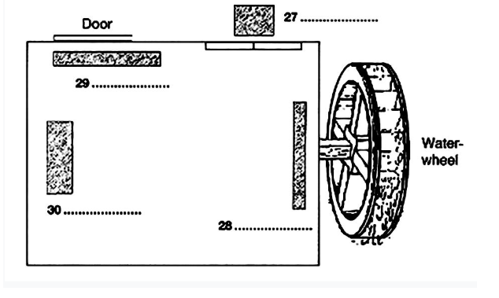

Listening Test: Nhấn vào từng Part bên dưới. Mỗi Part sẽ có một file nghe riêng biệt.
Questions 1-10
Write NO MORE THAN TWO WORDS AND/OR A NUMBER for each answer.
Cycling holiday in Austria
Example: Most suitable holiday lasts … 10 … days.
- Holiday begins on 1.
- No more than 2. people in cycling group.
- Each day, group cycles 3. on average.
- Some of the hotels have a 4.
- Holiday costs 5. £ per person without flights.
- All food included except 6.
- Essential to bring a 7.
- Discount possible on equipment at www.8. .com
- Possible that the 9. may change.
- Guided tour of a 10. is arranged.
Questions 11-14
Choose the correct letter, A, B or C.
The market is now situated
On only one day a week the market sells
The area is well known for
What change has taken place in the harbour area?
Questions 15-20
Which advantage is mentioned for each of the following restaurants?
Choose SIX answers from the box and write the correct letter, A-H.
Questions 21-26
Choose SIX answers from the box and write the correct letter, A-I, next to questions 21-26.
B. furniture
C. background noise
D. costumes
E. local council
F. equipment
G. shooting schedule
H. understudies
I. shopowners
↓
contact the 22. about roadworks
↓
plan the 23.
↓
hold auditions and recheck availability of the 24.
↓
choose the 25. from the volunteers
↓
rehearse
↓
collect 26. and organise food and transport
Questions 27-30
Choose four answers from the box and write the correct letter, A-G, next to questions 27-30.
B. fixed camera
C. mirror
D. torches
E. wooden screen
F. bike
G. large box

Questions 31-40
Complete the table below. Write NO MORE THAN TWO WORDS AND/OR A NUMBER for each answer.
| Origin | Name | New habitat | Notes |
|---|---|---|---|
| Australia | red-backed spider | New Zealand and Japan | Even so island in middle of 31. |
| England | rabbit | Australia | 800 years ago: imported into England to be used for 32. |
| America | fire ants | 33. in Brisbane |
imported by chance |
| Australia | 34. | Scotland | Deliberately introduced in order to improve 35. (not effective) |
| New Zealand | flatworm | 36. Europe |
accidental introduction inside imported 37. |
| Japan | 38. | Australian coastal waters | Some advantages |
| Australia | budgerigar | urban areas of south-east 39. |
Smaller flocks because of arrival of 40. in recent years |
READING PASSAGE 1
Going Bananas
A
The world's favourite fruit could disappear forever in 10 years time. The banana is among the world's oldest crops. Agricultural scientists believe that the first edible banana was discovered around ten thousand years ago. [4] It has been at an evolutionary standstill ever since it was first propagated in the jungles of South-East Asia at the end of the last ice age. [5] Normally the wild banana, a giant jungle herb called Musa acuminate, contains a mass of hard seeds that make the fruit virtually inedible. [6] But now and then, hunter-gatherers must have discovered rare mutant plants that produced seed-less, edible fruits. [7] Geneticists now know that the vast majority of these soft-fruited plants resulted from genetic accidents that gave their cells three copies of each chromosome instead of the usual two. [8] This imbalance prevents seeds and pollen from developing normally, rendering the mutant plants sterile. [9] And that is why some scientists believe the world's most popular fruit could be doomed. [10] It lacks the genetic diversity to fight off pests and diseases that are invading the banana plantations of Central America and the small-holdings of Africa and Asia alike. [11]
B
In some ways, the banana today resembles the potato before blight brought famine to Ireland a century and a half ago. But "it holds a lesson for other crops, too", says Emile Frison, top banana at the International Network for the Improvement of Banana and Plantain in Montpellier, France. [14] "The state of the banana", Frison warns, "can teach a broader lesson the increasing standardisation of food crops around the world is threatening their ability to adapt and survive." [15]
C
The first Stone Age plant breeders cultivated these sterile freaks by replanting cuttings from their stems. [17] And the descendants of those original cuttings are the bananas we still eat today. [18] Each is a virtual clone, almost devoid of genetic diversity. [19] And that uniformity makes it ripe for a disease like no other crop on Earth. [20] Traditional varieties of sexually reproducing crops have always had a much broader genetic base, and the genes will recombine in new arrangements in each generation. [21] This gives them much greater flexibility in evolving responses to disease and far more genetic resources to draw on in the face of an attack. [22] But that advantage is fading fast, as growers increasingly plant the same few, high-yielding varieties. [23] Plant breeders work feverishly to maintain resistance in these standardized crops. [24] Should these efforts falter, yields of even the most productive crop could swiftly crash. [25] "When some pest or disease comes along, severe epidemics can occur," says Geoff Hawtin, director of the Rome-based International Plant Genetic Resources Institute. [26]
D
The banana is an excellent case in point. Until the 1950s, one variety, the Gros Michel, dominated the world's commercial banana business. Found by French botanists in Asian the 1820s, the Gros Michel was by all accounts a fine banana, richer and sweeter than today's standard banana and without the latter's bitter aftertaste when green. [29] But it was vulnerable to a soil fungus that produced wilt known as Panama disease. [30] "One the fungus gets into the soil it remains there for many years. There is nothing farmers can do. Even chemical spraying won't get rid of it," says Rodomiro Ortiz, director of the International Institute for Tropical Agriculture in Ibadan, Nigeria. [31] So plantation owners played a running game, abandoning infested fields and moving so "clean" land - until they ran out of clean land in the 1950s and Had to abandon the Gros Michel. [32] Its successor and still the reigning commercial king is the Cavendish banana, a 19th-century British discovery from southern China. [33] The Cavendish is resistant to Panama disease and, as a result, it literally saved the international banana industry. [34] During the 1960s, it replaced the Gros Michel on supermarket shelves. [35] If you buy a banana today, it is almost certainly a Cavendish. [36] But even so, it is a minority in the world's banana crop. [37]
E
Half a billion people in Asia and Africa depend on bananas. Bananas provide the largest source of calories and are eaten daily. Its name is synonymous with food. [40] But the day of reckoning may be coming for the Cavendish and its indigenous kin. [41] Another fungal disease, black Sigatoka, has become a global epidemic since its first appearance in Fiji in 1963. Left to itself, black Sigatoka - which causes brown wounds on leaves and premature fruit ripening - cuts fruit yields by 50 to 70 per cent and reduces the productive lifetime of banana plants from 30 years to as little as 2 or 3. Commercial growers keep Sigatoka at bay by a massive chemical assault. [42] Forty sprayings of fungicide a year is typical. But despite the fungicides, diseases such as black Sigatoka are getting more and more difficult to control. [43] "As soon as you bring in a new fungicide, they develop resistance," says Frison. [44] "One thing we can be sure of is that the Sigatoka won't lose in this battle." [45] Poor farmers, who cannot afford chemicals, have it even worse. They can do little more than watch their plants die. [46] "Most of the banana fields in Amazonia have already been destroyed by the disease," says Luadir Gasparotto, Brazil's leading banana pathologist with the government research agency EMBRAPA. [47] Production is likely to fall by 70 percent as the disease spreads, he predicts. [48] The only option will be to find a new variety. [49]
F
But how? Almost all edible varieties are susceptible to diseases, so growers cannot simply change to a different banana. With most crops, such a threat would unleash an army of breeders, scouring the world for resistant relatives whose traits they can breed into commercial varieties. [52] Not so with the banana. Because all edible varieties are sterile, bringing in new genetic traits to help cope with pests and diseases is nearly impossible. [53] Nearly, but not totally. Very rarely, a sterile banana will experience a genetic accident that allows an almost normal seed to develop, giving breeders a tiny window for improvement. [54] Breeders at the Honduran Foundation of Agricultural Research have tried to exploit this to create disease-resistant varieties. [55] Further backcrossing with wild bananas yielded a new seedless banana resistant to both black Sigatoka and Panama disease. [56]
G
Neither Western supermarket consumers nor peasant growers like the new hybrid. Some accuse it of tasting more like an apple than a banana. [59] Not surprisingly, the majority of plant breeders have till now turned their backs on the banana and got to work on easier plants. [60] And commercial banana companies are now washing their hands of the whole breeding effort, preferring to fund a search for new fungicides instead. [61] "We supported a breeding programme for 40 years, but it wasn't able to develop an alternative to Cavendish. It was very expensive and we got nothing back," says Ronald Romero, head of research at Chiquita, one of the Big Three companies that dominate the international banana trade. [62]
H
Last year, a global consortium of scientists led by Frison announced plans to sequence the banana genome within five years. It would be the first edible fruit to be sequenced. Well, almost edible. [65] The group will actually be sequencing inedible wild bananas from East Asia because many of these are resistant to black Sigatoka. [66] If they can pinpoint the genes that help these wild varieties to resist black Sigatoka, the protective genes could be introduced into laboratory tissue cultures of cells from edible varieties. [67] These could then be propagated into new, resistant plants and passed on to farmers. [68] It sounds promising, but the big banana companies have, until now, refused to get involved in GM research for fear of alienating their customers. [69] "Biotechnology is extremely expensive and there are serious questions about consumer acceptance," says David McLaughlin, Chiquita's senior director for environmental affairs. [70] With scant funding from the companies, the banana genome researchers are focusing on the other end of the spectrum. [71] Even if they can identify the crucial genes, they will be a long way from developing new varieties that smallholders will find suitable and affordable. [72, 73] But whatever biotechnology's academic interest, it is the only hope for the banana. [74] Without banana production worldwide will head into a tailspin. We may even see the extinction of the banana as both a lifesaver for hungry and impoverished Africans and as the most popular product on the world's supermarket shelves. [75]
Questions 1-3
Complete the sentences below with NO MORE THAN THREE WORDS from the passage.
- Banana was first eaten as a fruit by humans almost years ago.
- Banana was first planted in .
- Wild banana's taste is adversely affected by its .
Questions 4-10
Look at the following statements and the list of people below. Match each statement with the correct person, A-F.
NB You may use any letter more than once.
A. Rodomiro Ortiz
B. David Mclaughlin
C. Emile Frison
D. Ronald Romero
E. Luadir Gasparotto
F. Geoff Hawtin
Pest invasion may seriously damage the banana industry.
The effect of fungal infection in the soil is often long-lasting. [98, 99]
A commercial manufacturer gave up on breeding bananas for disease-resistant species. [100, 101]
Banana disease may develop resistance to chemical sprays. [102, 103]
A banana disease has destroyed a large number of banana plantations. [104, 105]
Consumers would not accept the genetically altered crop. [106, 107]
Lessons can be learned from bananas for other crops. [108, 109]
Questions 11-13
Do the following statements agree with the information given? Write TRUE, FALSE, or NOT GIVEN.
Banana is the oldest known fruit.
Gros Michel is still being used as a commercial product.
Banana is the main food in some countries.
READING PASSAGE 2
Can we call it "ART" (2) - Life-Casting and Art
Julian Bames explores the questions posed by Life-Casts, an exhibition of plaster moulds of living people and objects which were originally used for scientific purposes. [134]
A
Art changes over time and our idea of what art is changing too. [136] For example, objects originally intended for devotional, ritualistic or recreational purposes may be recategorized as art by members of other later civilisations, such as our own, which no longer respond to these purposes. [137]
B
What also happens is that techniques and crafts which would have been judged inartistic at the time they were used are reassessed. [139] Life-casting is an interesting example of this. It involved making a plaster mould of a living person or thing. [140, 141] This was complex, technical work, as Benjamin Robert Haydon discovered when he poured 250 litres of plaster over his human model and nearly killed him. [142] At the time, the casts were used for medical research and, consequently, in the nineteenth-century life-casting was considered inferior to sculpture in the same way that, more recently, photography was thought to be a lesser art than painting. [143] Both were viewed as unacceptable shortcuts by the 'senior' arts. [144] Their virtues of speed and unwavering realism also implied their limitations; they left little or no room for the imagination. [145]
C
For many, life-casting was an insult to the sculptor's creative genius. [147] In an infamous lawsuit of 1834, a moulder whose mask of the dying French emperor Napoleon had been reproduced and sold without his permission was judged to have no rights to the image. [148] In other words, he was specifically held not to be an artist. [149] This judgement reflects the view of established members of the nineteenth-century art world such as Rodin, who commented that life-casting 'happens fast but it doesn't make Art'. [150] Some even feared that 'if too much nature was allowed in, it would lead Art away from its proper course of the Ideal. [151]
D
The painter Gauguin, at the end of the nineteenth century, worried about future developments in photography. [153] If ever the process went into colour, what painter would labour away at a likeness with a brush made from squirrel-tail? [154] But painting has proved robust. Photography has changed it, of course, just as the novel had to reassess narrative after the arrival of the cinema. [155] But the gap between the senior and junior arts was always narrower than the traditionalists implied. [156] Painters have always used technical back-up such as studio assistants to do the boring bits, while apparently lesser crafts involve great skill, thought, preparation and, depending on how we define it, imagination. [157]
E
Time changes our view in another way, too. Each new movement implies a reassessment of what has gone before? [159] What is done now alters what was done before. In some cases, this is merely self-serving, with the new art using the old to justify itself. [160] It seems to be saying, look at how all of that points to this! [161] Aren't we clever to be the culmination of all that has gone before? [162] But usually, it is a matter of re-alerting the sensibility, reminding us not to take things for granted. [163] Take, for example, the cast of the hand of a giant from a circus, made by an anonymous artist around 1889, an item that would now sit happily in any commercial or public gallery. [164] The most significant impact of this piece is on the eye, in the contradiction between unexpected size and verisimilitude. [165] Next, the human element kicks in, you note that the nails are dirt-encrusted, unless this is the caster's decorative addition, and the fingertips extend far beyond them. [166] Then you take in the element of choice, arrangement, art if you like, in the neat, pleated, buttoned sleeve-end that gives the item balance and variation of texture. [167] This is just a moulded hand, yet the part stands utterly for the whole. [168] It reminds us slyly, poignantly, of the full-size original. [169]
F
But is it art? And, if so, why? These are old tediously repeated questions to which artists have often responded, 'It is art because I am an artist and therefore what I do is art. [171] However, what doesn't work for literature works much better for artworks of art do float free of their creators' intentions. [172] Over time the "reader" does become more powerful. Few of us can look at a medieval altarpiece as its painter intended. [173] We believe too little and aesthetically know too much, so we recreate and find new fields of pleasure in the work. [174] Equally, the lack of artistic intention of Paul Richer and other forgotten craftsmen who brushed oil onto flesh, who moulded, cast and decorated in the nineteenth century is now irrelevant. [175] What counts is the surviving object and our response to it. [176] The tests are simple: does it interest the eye, excite the brain, move the mind to reflection and involve the heart. [177] It may, to use the old dichotomy, be beautiful but it is rarely true to any significant depth. [178] One of the constant pleasures of art is its ability to come at us from an unexpected angle and stop us short in wonder. [179]
Questions 14-18
Which paragraph contains the following information? Write the correct letter A-F. [180, 181]
an example of a craftsman's unsuccessful claim to ownership of his work [182, 183]
an example of how trends in the art can change attitudes to an earlier work [184, 185]
the original function of a particular type of art [186, 187]
ways of assessing whether or not an object is an art [188, 189]
how artists deal with the less interesting aspects of their work [190, 191]
Questions 19-24
Do the following statements agree with the claims of the writer? Write YES, NO, or NOT GIVEN. [192, 194, 196, 198]
Nineteenth-century sculptors admired the speed and realism of life-casting. [199, 200]
Rodin believed the quality of the life-casting would improve if a slower process were used. [204, 205]
The importance of painting has decreased with the development of colour photography. [209, 210]
Life-casting requires more skill than sculpture does. [214, 215]
New art encourages us to look at earlier work in a fresh way. [219, 220]
The intended meaning of a work of art can get lost over time. [224, 225]
Questions 25-26
Choose the correct letter, A, B, C or D. [229]
The most noticeable contrast in the cast of the giant's hand is between the... [231, 232]
According to the writer, the importance of any artistic object lies in... [237, 238]
READING PASSAGE 3
Global Warming in New Zealand [243]
A
For many environmentalists, the world seems to be getting warmer. [244] As the nearest country of the South Polar Region, New Zealand has maintained an upward trend in its average temperature in the past few years. [245] However, the temperature in New Zealand will go up 40C in the next century while the polar region will go up more than 60C. [246] The different pictures of temperature stem from its surrounding ocean which acts as the air conditioner. [247] Thus New Zealand is comparatively fortunate. [248]
B
Scientifically speaking, this temperature phenomenon in New Zealand originated from what researchers call "SAM (Southern Annular Mode), which refers to the wind belt that circles the Southern Oceans including New Zealand and Antarctica. Yet recent work has revealed that changes in SAM in New Zealand have resulted in a weakening of moisture during the summer, and more rainfall in other seasons. A bigger problem may turn out to be heavier droughts for agricultural activities because of more water loss from soil, resulting in the poorer harvest before winter when the rainfall arrives too late to rescue. [250]
C
Among all the calamities posed by drought, moisture deficit ranks the first. [252] Moisture deficit is that gap between the water plants need during the growing season and the water the earth can offer. [253] Measures of moisture deficit were at their highest since the 1970s in New Zealand. [254] Meanwhile, ecological analyses clearly show moisture deficit is imposed at the different growth stage of crops. [255] If moisture deficit occurs around a crucial growth stage, it will cause about 22% reduction in grain yield as opposed to moisture deficit at the vegetative phase. [256]
D
Global warming is not only affecting agriculture production. When scientists say the country's snowpack and glaciers are melting at an alarming rate due to global warming, the climate is putting another strain on the local places. [258] For example, when the development of global warming is accompanied by the falling snow line, the local skiing industry comes into a crisis. [259] The snow line may move up as the temperature goes up, and then the snow at the bottom will melt earlier. [260] Fortunately, it is going to be favourable for the local industry to tide over tough periods since the quantities of snowfall in some areas are more likely to increase. [261]
E
What is the reaction of the glacier region? The climate change can be reflected in the glacier region in southern New Zealand or land covered by ice and snow. [263] The reaction of a glacier to a climatic change involves a complex chain of processes. [264] Overtime periods of years to several decades, cumulative changes in mass balance cause volume and thickness changes, which will affect the flow of ice via altered internal deformation and basal sliding. [265] This dynamic reaction finally leads to glacier length changes, the advance or retreat of glacier tongues. [266] Undoubtedly, glacier mass balance is a more direct signal of annual atmospheric conditions. [267]
F
The latest research result of National Institute of Water and Atmospheric (NIWA) Research shows that glaciers line keeps moving up because of the impacts of global warming. [269] Further losses of ice can be reflected in Mt. Cook Region. [270] By 1996, a 14 km long sector of the glacier had melted down forming a melt lake (Hooker Lake) with a volume. [271] Melting of the glacier front at a rate of 40 m/yr will cause the glacier to retreat at a rather uniform rate. [272] Therefore, the lake will continue to grow until it reaches the glacier bed. [273]
G
A direct result of the melting glaciers is the change of high tides that serves the main factor for sea-level rise. [275] The trend of sea-level rise will bring a threat to the groundwater system for its hypersaline groundwater and they pose a possibility to decrease agricultural production. [276] Many experts believe that the best way to counter this trend is to give a longer-term view of sea-level change in New Zealand. [277] Indeed, the coastal boundaries need to be upgraded and redefined. [278]
H
There is no doubt that global warming has affected New Zealand in many aspects. [280] The emphasis on global warming should be based on the joints efforts of local people and experts who conquer the tough period. [281] For instance, farmers are taking a long term, multi-generational approach to adjust the breeds and species according to the temperature. [282] Agriculturists also find ways to tackle the problems that may bring to the soil. [283] In broad terms, going forward, the systemic resilience that's been going on a long time in the ecosystem will continue. [284]
I
How about animals' reaction? Experts have surprisingly realised that animals have an unconventional adaptation to global warming. [285] A study has looked at sea turtles on a few northern beaches in New Zealand and it is very interesting to find that sea turtles can become male or female according to the temperature. [286] Further researches will try to find out how rising temperatures would affect the ratio of sex reversal in their growth. [287] Clearly, the temperature of the nest plays a vital role in the sexes of the baby turtles. [288]
J
Tackling the problems of global warming is never easy in New Zealand because records show the slow process of global warming may have a different impact on various regions. [290] For New Zealand, the emission of carbon dioxide only accounts for 0.5% of the world's total, which has met the governmental standard. [291] However, New Zealand's effort counts only the tip of the iceberg. [292] So far, global warming has been a world issue that still hangs in an ambiguous future. [293]
Questions 27-32
Choose the correct letter, A, B, C or D. [294]
What is the main idea of the first paragraph? [295, 296]
What is one effect of the wind belt that circles the Southern Oceans? [301, 302]
What does "moisture deficit" mean to the grain and crops? [307, 308]
What changes will happen to the skiing industry due to the global warming phenomenon? [313, 314]
Cumulative changes over a long period of time in mass balance will lead to... [319, 320]
Why does the writer mention NIWA in the sixth paragraph? [325, 326]
Questions 33-35
Complete the summary below. Choose NO MORE THAN TWO WORDS from the passage for each answer. [331]
Research data shows that sea level has a close relationship with the change of climate. [333] The major reason for the increase in sea level is connected with (33) [334]. The increase in sea level is also said to have a threat to the underground water system, the destruction of which caused by the rise of sea level will lead to a high probability of a reduction in (34) [335]. In the long run, New Zealanders may have to improve the (35) if they want to diminish the effect change in sea levels. [335]
Questions 36-40
Do the following statements agree with the claims of the writer? Write YES, NO, or NOT GIVEN. [339, 341, 343, 345]
Farmers are less responsive to climate change than agriculturists. [346, 347]
The agricultural sector is too conservative and deals with climate change. [351, 352]
Turtle is vulnerable to climate change. [356, 357]
Global warming is going slowly, and it may have different effects on different areas in New Zealand. [361, 362]
New Zealand must cut carbon dioxide emission if they want to solve the problem of global warming. [366, 367]
WRITING TASK 2
You should spend about 40 minutes on this task.
Some people think that universities should provide graduates with the knowledge and skills needed in the workplace. Others think that the true function of a university should be to give access to knowledge for its own sake, regardless of whether the course is useful to an employer.
Discuss both views and give your opinion.
Write at least 250 words.
Submit Your Essay Below
* Điền thông tin và viết bài trực tiếp vào biểu mẫu dưới đây để gửi bài cho giáo viên.